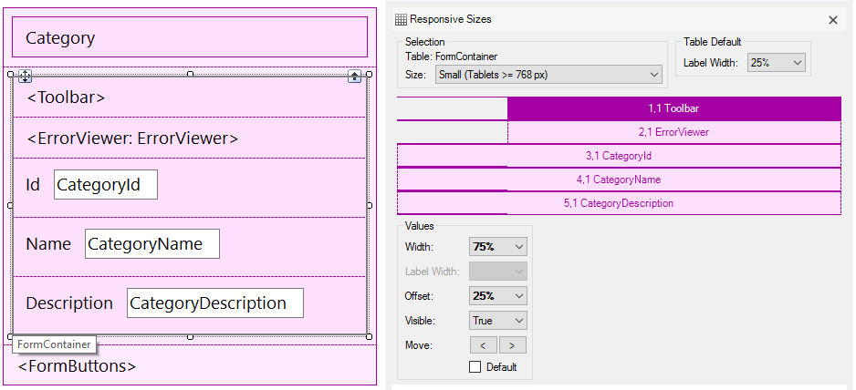

GeneXus generates default RWD forms for web transactions, Work With pattern forms, and prompts.
The purpose of this document is to explain RWD in GeneXus by analyzing the default form generated for a web transaction.
First, we recommend reading: My first Responsive Web Application.
Let's analyze the "Category" RWD default web transaction form. In this case, the web form is set as default, and the Web Form Defaults property is set to Responsive Web Design. This is the default value.
The Theme used by default is Carmine. If the Theme being used isn't Carmine (or a save as of it), the default settings are the same as those of X Evolution 3.
Category Web Transaction default form
This design can be adapted at runtime to any screen size (any device). The details of the solution are described later on in this text.
The figure above shows the Abstract layout of the web transaction. In order to edit this web transaction layout, the designer uses the Web Abstract Editor by dropping controls in the form from the toolbox, and editing the layout with the Responsive Sizes property.
This example is a one-level web transaction.
The layout is presented with a main Responsive Table control, where the rest of the controls are dropped inside (each in a different row). This is called the Main Table.
The web form layout includes all the edit controls corresponding to each attribute of the transaction. Each edit control is displayed with its label
to the left.
Besides, the Error Viewer control and two Action Group controls are included (Toolbar and FormButtons) for the paging buttons and the confirm, delete and cancel buttons, respectively.
Controls in the Airport Web Transaction default form
In sum, the default form shows a responsive table, which includes:
The properties can be shown by pressing F4.
First of all, remember that what the designer views in the web form layout is not any particular design; it's like a table that determines the different rows and columns available and the controls inside. For each screen size, the designer will determine the distribution of these columns (which can interchange their position, be hidden or have different widths).
By right-clicking on the form, the Responsive Sizes property can be selected, and dialog is displayed where the designer can configure the settings for the different screen sizes.
There, a combo box displays four different options:
- Extra Small (Phones < 768 px)
- Small (Tablets >= 768 px)
- Medium (Desktop >= 992 px)
- Large (Desktop >= 1200 px)
Each one of these options displays a grid where the designer may configure the width, visibility, horizontal position (Move), Label Width property, and offset of each column for the corresponding screen size.
By default, the web transaction form has the following settings:
1. Extra Small Screen Design for the Category transaction Web Form
The Main Table consists of three rows (the Title Container, the Form container - where all the transaction input controls are - and the Form buttons).
The extra small screen is designed by default so that all the controls are stacked in only one row.
2. Small Screen Design for the Category transaction Web Form
The Form Container rows is centered and expands to 67% of the screen's width.
The small screen is designed by default so that all the controls are stacked in only one row; the Error Viewer and Toolbar Action Groups have an offset other than 0.

All these settings are translated into BootStrap CSS classes which are assigned to the columns, in order to get the results at runtime.
The medium-size screen inherits from the small screen. The same happens with the large screen which inherits from the medium-size screen. Therefore, there are no explicit settings for medium and large-size screens in the default RWD of web transaction forms.
At runtime it looks as follows:
1. Extra Small Screen execution of the Category Web Form
2. Small Screen execution of the Category Web Form
The width assigned to the label and to the input controls is automatic for small devices. For labels, the width is 25% by default, and for the input, it is 75%.
For extra small screens, the default is 100% for both, the label and the input control. See Label Width property to change that default values.
As a consequence, for extra small screen devices, the labels are shown at the top of the input control by default, whereas for small and wider screens the labels are shown on the left side of the input control.
Further Reading: How to use the Abstract Editor: designing a Web Transaction Form
Arranging the layout in a RWA
|